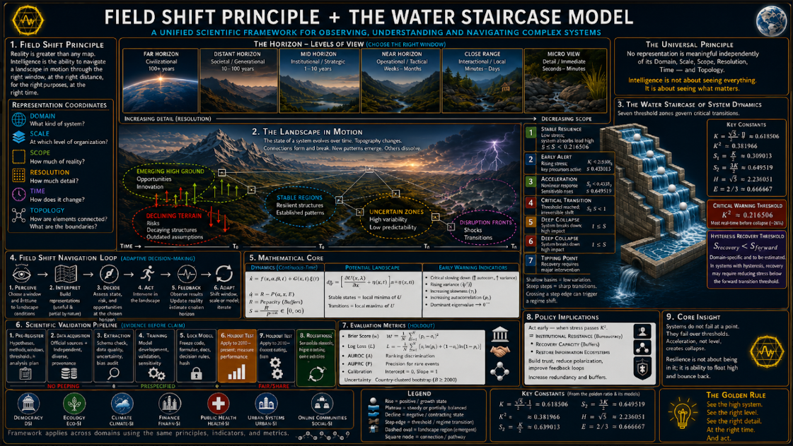

The FieldShift Principle
En universell teori om representation
Field Shift handlar om en mycket generell fråga:
Hur väljer en intelligent aktör rätt representation av ett system för att kunna förstå och agera i en värld som förändras?
Den beskriver därför:
vilken skala man tittar på
vilket tidsperspektiv
vilket fönster
vilken upplösning
vilken topologi
vilket syfte
Den säger inte exakt hur ett system förändras. Den säger bara
“För att förstå ett system måste du observera det från rätt nivå.”
Detta är en metaprincip.
Water Staircase
Vattenfallstrappan beskriver däremot inte hur man observerar utan hur dynamiken utvecklas när belastningen ökar.
Den beskriver:
stabilitet
drift
acceleration
kritiska övergångar
kollaps
återhämtning
Den är alltså en modell för systemdynamik.
Då blir relationen:
Field Shift
↓
väljer rätt representation
↓
Water Staircase
↓
beskriver den dynamik som observeras.
Ungefär så här:
FIELD SHIFT
(How to observe reality)
▼
Choose
Domain
Scale
Scope
Resolution
Time
Topology
▼
Observe
▼
WATER STAIRCASE
(How systems evolve)
Stability
↓
Drift
↓
Acceleration
↓
Critical Transition
↓
Collapse
▼
Feedback
▼
Field Shift updates representation
Den riktigt starka kopplingen finns redan i denna första poster:

Titta på mittenbilden. Du har:
Emerging High Ground
Stable Regions
Uncertain Zones
Disruption Fronts
Detta motsvarar nästan exakt vattenfallstrappan:
Stable Region
↓
Zone 1
Stability
Bred bassäng
Låg känslighet
Uncertain Zone
↓
Zone 2
Drift
Tidig varning
Narrow Passage
(finns implicit)
↓
Zone 3
Acceleration
Små förändringar får stor effekt.
Disruption Front
↓
Zone 4
Critical Transition
Kaskader
Collapse Basin
↓
Zone 5–7
Hysteres
Ny stabil nivå
Det är egentligen samma landskap som beskrivs med två olika metaforer.
Den geometriska kopplingen
Field Shift beskriver världen som
ett landskap.
Water Staircase beskriver
hur energi rör sig genom landskapet.
Precis som inom fysiken.
Potentiallandskap
↓
vatten rinner
↓
hastigheten förändras
↓
kritiska passager
↓
kaskader
Detta är ett välkänt sätt att beskriva
dynamiska system
katastrofteori
potentialfält
gradientflöden
Här blir metaforen vetenskapligt stark.
Navigation Loop
Här tycker jag kopplingen blir ännu bättre.
Field Shift har
Perceive
↓
Interpret
↓
Decide
↓
Act
↓
Feedback
↓
Adapt
Men vad gör Feedback?
Den mäter egentligen
var bollen befinner sig i vattenfallet.
Det innebär att feedback inte bara ändrar modellen.
Den mäter också
tryck
nivå
hastighet
vilket avgör om systemet närmar sig
Acceleration Zone.
Representation ↔︎ Dynamik
Nu får man två axlar.
Horisontell axel
Hur systemet förändras.
Stability
↓
Drift
↓
Acceleration
↓
Collapse
Vertikal axel
Hur vi observerar.
Far Horizon
↓
Mid Horizon
↓
Near Horizon
↓
Micro
Då kan samma vattenfall studeras
på individnivå
organisationsnivå
nationsnivå
civilisationnivå
Field Shift säger
vilket perspektiv du väljer.
Water Staircase säger
vad som faktiskt händer.
Den universella principen
Jag tror att den gemensamma teorin skulle kunna uttryckas så här:
Alla komplexa system utvecklas genom ett dynamiskt landskap där belastning, återkoppling och struktur förändrar systemets tillstånd över tid. För att förstå eller påverka denna utveckling måste observatören välja rätt representation (Field Shift) och samtidigt identifiera var systemet befinner sig längs sin dynamiska bana (Water Staircase). Intelligens handlar därför inte bara om att se mer – utan om att observera rätt nivå och förstå systemets aktuella dynamiska fas.
En möjlig arkitektur
Då blir de fem postrarna delar av en sammanhängande teori snarare än separata idéer:
1. Field Shift Principle
Den universella teorin om representation och
observation.
↓
2. Landscape Dynamics
Hur komplexa landskap förändras över tid.
↓
3. Water Staircase Model
Den generella modellen för dynamiska fasövergångar och
kritiska trösklar.
↓
4. Domain-Specific Models
Demokrati, klimat, ekologi, ekonomi, hälsa m.fl., där
samma dynamiska princip uttrycks genom domänspecifika
variabler.
↓
5. Navigation & Decision
Hur observation, mätning och återkoppling används för att
styra system mot stabilitet och undvika oönskade kritiska
övergångar.
Den här strukturen är betydligt mer vetenskapligt robust än att presentera Field Shift och vattenfallstrappan som två konkurrerande teorier. I stället blir Field Shift en metaram för representation, medan Water Staircase blir en generell dynamisk modell inom den ramen. Det är en tydlig arbetsdelning som harmonierar med etablerade idéer inom komplexa system, dynamiska system och kontrollteori, samtidigt som den lämnar de domänspecifika hypoteserna öppna för empirisk prövning.
FieldShift Water Staircase Formell Karna
2026-07-26
Detta ska behandlas som ett långsiktigt, artifact-drivet forskningsprogram med krav på formell matematik, reproducerbar kod, empirisk prövning och tydlig åtskillnad mellan bevisade resultat och hypoteser.
Det går att bygga ett robust ramverk, men en avgörande korrigering krävs:
Bildernas tal , , , , , och övriga konstanter kan inte kallas universella naturlagar enbart därför att de kan härledas ur en hexagon eller sinuskurva.
De kan användas som normaliserade modelltrösklar, men deras empiriska universalitet måste testas separat. Samma sak gäller vattenfallstrappans påståenden och hypoteser om demokrati, ekologi, klimat och universum. Vetenskaplig robusthet kräver att vi börjar med en generell modell och därefter undersöker vilka trösklar som faktiskt stöds i respektive domän.
Nedan är den första formella kärnan.
1. Grundläggande objekt
Definition 1 — Dynamiskt system
Ett dynamiskt system definieras som
där
är tillståndsrummet,
är mängden möjliga interventioner eller styrsignaler,
är parameterutrymmet,
är systemets dynamik och
är observationsfunktionen.
I kontinuerlig tid:
där representerar stokastisk påverkan.
I diskret tid:
Det faktiska tillståndet behöver inte vara direkt observerbart.
Definition 2 — Representation
En representation av systemet är en avbildning
där är ett representationsrum och
är en representationskonfiguration bestående av:
: domän,
: skala,
: omfång eller observationsfönster,
: upplösning,
: tidshorisont,
: topologisk struktur.
Det observerade tillståndet är
Detta är den matematiska motsvarigheten till Field Shift-principens representationskoordinater.
Definition 3 — Field Shift
Ett Field Shift är en förändring av representationskonfigurationen:
Det förändrar inte nödvändigtvis det verkliga systemet. Det förändrar hur systemet observeras, komprimeras eller organiseras.
Exempel:
Detta är ett skifte i skala, tidsupplösning och omfång.
2. Representationens informationsvärde
Field Shift kan inte definieras som att en bild bara känns mer relevant. Valet behöver optimeras matematiskt.
Definition 4 — Representationsnytta
För ett syfte definieras representationsnyttan som
där
är den information representationen innehåller om målet ,
är beräkningskostnaden,
är representations- eller skattningsfelet,
är latensen,
.
Den optimala representationen definieras av
Detta formaliserar uttrycket:
Rätt fönster, på rätt avstånd, för rätt syfte och vid rätt tidpunkt.
Sats 1 — Ingen representation är generellt optimal
Antag att det finns två uppgifter med olika målvariabler och att deras tillräckliga statistik skiljer sig. Då finns det i allmänhet ingen representation som samtidigt maximerar
Bevis
Antag motsatsen: att samma är optimalt för båda uppgifterna.
Om kräver lokal högupplöst information medan kräver långsiktig aggregerad information, medför högre lokal upplösning normalt högre kostnad och brus för , medan aggregering förlorar relevant information för .
Därmed finns representationer sådana att
men
Det motsäger antagandet att en representation är gemensamt optimal. Alltså är representationsoptimalitet ändamålsberoende.
Detta är en formell version av Field Shift-principens kärna.
3. Vattenfallstrappans dynamiska modell
Vattenfallstrappan bör inte modelleras genom att bokstavligen anta att alla system följer samma geometriska trappa. Den kan formaliseras som rörelse i ett tillstånds- eller potentiallandskap.
Definition 5 — Belastning, kapacitet och normaliserad stress
Låt
vara total systembelastning och
vara effektiv absorptions- och återhämtningskapacitet.
Definiera normaliserad stress som
Då gäller
Alternativt kan belastningskvoten användas:
Sambandet är
Denna normalisering är bättre än att anta godtyckliga universella absoluta nivåer.
Definition 6 — Volym, nivå och hastighet
För vattenfallsmetaforen definieras:
total belastningsvolym,
belastningsnivå relativt kapaciteten och
belastningens förändringshastighet.
Acceleration är
Dessa variabler ska inte sammanblandas:
hög volym behöver inte innebära hög nivå om kapaciteten är stor,
hög nivå behöver inte innebära snabb försämring om ,
låg nivå kan ändå vara farlig om och är stora.
4. Potentiallandskap
Definition 7 — Gradientmodell
Antag att systemets makrotillstånd utvecklas enligt
där
är ett potentiallandskap,
är en långsamt varierande belastningsparameter,
är extern styrning,
är en Wienerprocess.
Lokala minima i motsvarar stabila tillstånd eller bassänger.
Lokala maxima motsvarar barriärer mellan regimer.
Vattenfallstrappans bassänger kan därför tolkas som metastabila attraktorer.
Definition 8 — Lokal stabilitet
Ett jämviktstillstånd uppfyller
Det är lokalt asymptotiskt stabilt om
Det är instabilt om
Sats 2 — Potentialen är en Lyapunovfunktion
För det deterministiska gradientflödet
gäller
Bevis
Med kedjeregeln:
Insättning av dynamiken ger
Uttrycket är aldrig positivt. Därmed minskar potentialen längs varje bana utom vid jämviktspunkter.
Detta ger en rigorös fysisk grund för landskaps- och bassängmetaforen.
5. En minimal modell för kritisk övergång
En normalform för en saddle-node-bifurkation är
Här är en kontrollparameter.
Jämvikterna uppfyller
alltså
för .
Derivatan av vektorfältet är
Vid
är
så jämvikten är stabil.
Vid
är
så jämvikten är instabil.
När
sammanfaller jämvikterna och försvinner. Detta är en verklig matematisk tipping point.
Sats 3 — Kritisk avmattning
För små perturbationer
kring den stabila jämvikten gäller approximativt
Återhämtningstiden är därför
När
gäller
Bevis
Linjärisera kring :
Lösningen är
Karakteristisk återhämtningstid är inversen av exponentens absolutvärde:
Följaktligen divergerar återhämtningstiden vid bifurkationen.
Detta är den matematiska grunden för kritisk avmattning. Ökande autokorrelation och varians kan förekomma när ett system närmar sig vissa typer av kritiska övergångar, men de är inte universellt garanterade för alla regimskiften. (Nature)
6. Formell vattenfallsklassificering
Låt
vara den största realdelen bland Jacobimatrisens egenvärden:
Låt dessutom
vara avståndet till närmaste identifierade bassänggräns.
Faserna kan definieras operationellt:
Stabilitet
Drift
eller
med bibehållen bassäng.
Acceleration
eller
Kritisk övergång
En bana korsar en bassänggräns eller systemets tidigare attraktor upphör att existera:
Kollaps
Kollaps är inte en rent matematisk synonym till bifurkation. Den kräver en normativ eller funktionell definition:
där är en domänspecifik funktions- eller prestationsvariabel.
Detta är viktigt. Ett system kan byta regim utan att den nya regimen vetenskapligt kan kallas ”kollaps”.
7. Hysteres
En standardmodell är cuspnormalformen
med
Då är
Jämvikterna uppfyller
Diskriminanten är
När
finns tre reella jämvikter, vanligen två stabila och en instabil. Därmed kan systemet ha flera alternativa stabila regimer.
Hysteres innebär att övergångsvärdet vid ökande belastning skiljer sig från återhämtningsvärdet vid minskande belastning:
Detta ger en rigorös version av vattenfallstrappans idé att återhämtning kan kräva att systemet återförs längre än till den ursprungliga övergångsnivån.
8. Topologi och nätverk
För många verkliga system är ett skalärt tillstånd otillräckligt.
Definition 9 — Nätverksdynamik
Låt
vara en viktad graf med adjacensmatris . Varje nod har ett tillstånd .
En generell kopplad modell är
Matrisen
är grafens Laplacematris.
Topologiska förändringar kan representeras som
eller som ett multilagernätverk
Detta motsvarar Field Shift-bildens fokus på förbindelser, gränser och förändrad topologi.
Definition 10 — Systemisk sårbarhet
En möjlig lokal sårbarhetsfunktion är
där är nätverkets spektralradie.
Denna form är en modellhypotes, inte en bevisad universell lag. Vikterna måste skattas och valideras domänspecifikt.
9. Kopplingen mellan Field Shift och Water Staircase
Den förenade modellen kan uttryckas som ett partiellt observerbart styrproblem.
Definition 11 — Field-Shift Water-Staircase-system
där
beskriver verklighetens dynamik,
är mängden möjliga representationer,
är observationsmodeller,
är fas- eller regimklassificeraren,
är beslutsregeln.
Vid tidpunkt :
Här är observatörens trosfördelning över systemets verkliga tillstånd.
Detta gör modellen till en variant av ett POMDP, ett partiellt observerbart Markovbeslutsproblem.
10. Navigation Loop som algoritm
Algorithm FSWS-NAVIGATE
Input:
observation streams Y
candidate representations R
system model family M
purpose-dependent loss function L
intervention set U
Initialize:
belief state b0
representation ρ0
model posterior P(M | data)
For k = 0,1,2,...:
1. PERCEIVE
Acquire yk using representation ρk
2. INTERPRET
Update state estimate:
bk ← BayesianFilter(bk−1, yk, ρk)
Estimate:
stress sk
dominant eigenvalue λmax,k
recovery rate rk
basin distance dB,k
uncertainty uk
3. CLASSIFY
phasek ← PhaseClassifier(
sk, dsk/dt, d²sk/dt²,
λmax,k, dB,k, uk
)
4. DECIDE
For each intervention u ∈ U:
simulate predictive distribution
compute expected loss and risk
uk* ← argminu ExpectedLoss(u | bk)
5. ACT
Apply uk*
6. FEEDBACK
Observe subsequent response
compare prediction and outcome
update model posterior
7. FIELD SHIFT
For each candidate representation ρ:
compute expected information gain
subtract cost, latency and distortion
ρk+1 ← argmaxρ RepresentationUtility$ρ$
8. ADAPT
Re-estimate parameters
retain, revise or reject model
11. Testbara satser och hypoteser
Ramverket behöver en hierarki av påståenden.
Matematiskt bevisbara satser
Exempel:
Potentialen minskar längs deterministiska gradientflöden.
Återhämtningstiden divergerar nära den specificerade saddle-node-normalformen.
En representation som är optimal för en uppgift behöver inte vara optimal för en annan.
Aggregering kan förstöra identifierbarhet.
Fler observationer förbättrar inte alltid beslutet om kostnad, brus och fördröjning ökar.
Modellberoende satser
Exempel:
Om Jacobimatrisens största egenvärde närmar sig noll från vänster och brusnivån är stationär, ökar återhämtningstiden i den lokalt linjäriserade modellen.
Detta är korrekt under angivna antaganden, men inte utan dem.
Empiriska hypoteser
Exempel:
Den sista är en stark och intressant hypotes. Den får inte presenteras som bevisad innan den har testats.
12. Hexagon- och sinuskonstanterna
För en regelbunden hexagon med vinklar
är sinusvärdena
Talen
följer inte direkt som de sex sinusvärdena. Däremot kan vissa av dem konstrueras som delningar eller approximationer, exempelvis
Det sista är inte exakt .
Vidare är
Alltså kommer naturligt från sinus eller cosinus vid , inte från hexagonens primära vinklar.
En vetenskapligt korrekt framställning måste därför ange exakt:
vilken geometrisk konstruktion varje konstant kommer från,
om värdet är exakt eller avrundat,
varför denna geometri ska styra systemdynamiken,
om värdet är en modellparameter eller empiriskt skattad tröskel.
Utan dessa steg är sambandet numerologiskt snarare än matematiskt härlett.
13. Verkliga testdomäner
Ramverket kan prövas på flera typer av system, men varje domän behöver egna mätvariabler.
| Domän | Tillstånd | Belastning | Kapacitet | Övergång |
|---|---|---|---|---|
| Sjöekologi | fosfor, algbiomassa, syre | näringstillförsel | sedimentbindning, biologisk reglering | eutrof regim |
| Klimatsystem | temperatur, salthalt, cirkulation | strålningsdrivning, färskvatten | återkopplingar och värmetransport | cirkulationsskifte |
| Elsystem | frekvens, fasvinklar, spänning | last och störningar | reserv- och reglerkraft | synkroniseringsförlust |
| Demokrati | institutionella indikatorer | polarisation, maktkoncentration, informationsstörning | domstolar, normer, medier | auktoritär regimförändring |
| Finansiella nätverk | likviditet, exponeringar | skuldsättning, uttag, prisfall | kapital, likviditetsbuffertar | kaskad/default |
| Astrofysik | densitet, temperatur, angular momentum | gravitation, massinflöde | tryck, rotation, strålning | kollaps eller fasförändring |
Tidiga varningssignaler har undersökts inom ekologiska, klimatiska, medicinska, sociala och tekniska system, men forskning visar också att kritisk avmattning inte förekommer före alla typer av övergångar. Därför måste varje användning jämföras med nullmodeller och alternativa mekanismer. (Nature)
14. Empiriskt testprotokoll
För varje domän bör följande procedur användas:
Förregistrera tillstånd, utfall och övergångskriterium.
Separera tränings-, validerings- och holdoutperioder.
Skatta parametrar endast i träningsdata.
Jämför med starka baslinjer, exempelvis autoregression, state-space-modell och domänstandard.
Testa flera representationer och kvantifiera Field Shift-effekten.
Utför ablationsanalys där domän, skala, omfång, upplösning, tid och topologi tas bort en i taget.
Testa falska övergångar och stationära surrogate-data.
Rapportera kalibrering, sensitivitet, specificitet, Brier score och prognoshorisont.
Undersök tröskelstabilitet mellan länder, tidsperioder och domäner.
Genomför extern replikation.
För tidsserier ska modellen bland annat jämföras mot
state-space-modeller,
och data-drivna operatorbaserade modeller. Koopmanmetoder kan representera icke-linjär dynamik genom linjära operatorer på observerbara funktioner, men ändlig approximation och identifierbarhet är centrala begränsningar. (arXiv)
15. Föreslagen paperstruktur
Arbetsrubrik
Field-Shift Navigation in Dynamic Landscapes: A Representation-Dependent Framework for Detecting and Controlling Critical Transitions
Paper I — Formell teori
Introduction
Representation coordinates
Dynamic landscape model
Field-shift operators
Basin and transition definitions
Stability and Lyapunov results
Adaptive navigation algorithm
Identifiability and impossibility results
Numerical experiments
Limitations and falsifiability
Paper II — Beräkningsmodell
öppen källkod,
syntetiska dynamiska system,
bifurkationsdiagram,
Monte Carlo-simuleringar,
adaptiv representation,
jämförelse med fasta observationsfönster.
Paper III — Empiriska domäner
demokrati,
ekologi,
finansiella system,
tekniska nätverk.
16. Vetenskaplig status just nu
Det som redan kan försvaras:
Field Shift kan formaliseras som adaptivt val av observations- och representationsoperator.
Vattenfallstrappan kan formaliseras med dynamiska system, attraktorer, bifurkationer, potentiallandskap, nätverk och styrteori.
Sambandet mellan dem kan beskrivas som partiellt observerbar adaptiv navigation.
Flera av de centrala stabilitetsresultaten kan bevisas under tydliga antaganden.
Modellen kan implementeras algoritmiskt och testas genom simulering och verkliga data.
Det som ännu inte kan försvaras:
att samma sju tal är universella konstanter för alla komplexa system,
att en hexagon orsakar biologiska, demokratiska eller kosmiska trösklar,
att eller alltid är verkliga varnings- eller kollapsnivåer,
att alla system följer samma ordning av faser,
att alla kritiska övergångar ger samma tidiga varningssignaler.
Den vetenskapligt starka vägen är därför:
Detta utgör en hållbar matematisk grund. Nästa konkreta forskningsartefakt bör vara ett komplett Definitions–Axioms–Theorems–Algorithms-dokument, följt av en körbar referensimplementation med saddle-node-, cusp-, nätverks- och adaptiva Field Shift-simuleringar.
Den första kompletta, verifierbara versionen är färdig.
Leveranser
Formellt Definitions–Axioms–Theorems–Algorithms-dokument, DOCX
Dokumentet som PDF
Körbar referensimplementation med kod, tester och resultat, ZIP
Vad dokumentet innehåller
Dokumentet formaliserar:
Field Shift som en ändamålsberoende teori för val av domän, skala, omfång, upplösning, tidshorisont och topologi.
Water Staircase som ett dynamiskt lager för stabilitet, drift, acceleration, kritiska övergångar, hysteresis, återhämtning och funktionell kollaps.
Tillståndsrum, observationsoperatorer och Field Shift-operatorer.
Belastning, kapacitet och dimensionslös stress.
Potentiallandskap, attraktorer och attraktionsbassänger.
Saddle-node-bifurkation med bevis för jämvikter, stabilitet och kritisk avmattning.
Cuspmodellen med diskriminant, multistabilitet och hysteresis.
Nätverksdynamik, graf-Laplacian och spektrala stabilitetsvillkor.
En POMDP-baserad formulering där systemet både väljer fysisk intervention och observationsrepresentation.
Tre huvudalgoritmer: navigationsloopen, säkrad early-warning-analys och adaptiv Field Shift.
Falsifikations-, validerings- och reproducerbarhetsprotokoll.
En tydlig vetenskaplig klassificering av de geometriska talen som möjliga normaliseringar eller hypoteser, inte automatiskt som universella naturlagar.
Den formella grunden anknyter till etablerad forskning om kritisk avmattning och tidiga varningssignaler, men dokumentet inkluderar också de kända begränsningarna: sådana signaler är inte garanterade före alla övergångar och kan påverkas av stokastiska skiften, snabb parameterförändring, brus och överlappande tidsskalor. Nature
Den adaptiva observationsdelen är formulerad som ett utvidgat partiellt observerbart beslutsproblem, i linje med den etablerade POMDP-formalismen. Kaelbling, Littman och Cassandra
Koopmanperspektivet behandlas som en möjlig framtida metod för att analysera observerbara funktioner i icke-linjära system, samtidigt som dokumentet tydliggör att ändligdimensionella approximationer är en central metodologisk begränsning. Modern Koopman Theory for Dynamical Systems
Referensimplementationen
ZIP-paketet innehåller:
fieldshift_reference/
├── fsws/
│ ├── __init__.py
│ ├── models.py
│ └── metrics.py
├── examples/
│ └── run_all.py
├── tests/
│ └── test_models.py
├── results/
│ ├── saddle_node.png
│ ├── cusp_hysteresis.png
│ ├── network_cascade.png
│ ├── adaptive_field_shift.png
│ └── summary.json
├── requirements.txt
└── README.md
De fyra körbara modellerna är:
Saddle-node-simulering
Cusp- och hysteresmodell
Nätverksmodell
Adaptiv Field Shift
Modellen väljer dynamiskt mellan observationsfönster med olika upplösning genom att minimera en kombination av prognosfel, observationskostnad och uppskattad informationsnytta.
I den medföljande reproducerbara exempelkörningen korsade det latenta systemet beslutströskeln vid iteration 359. Den fasta grova representationen upptäckte den vid iteration 395, medan den adaptiva Field Shift-modellen upptäckte den vid iteration 361. Resultatet är en demonstration för den specificerade syntetiska modellen, inte ännu ett generellt empiriskt bevis.
Samtliga inkluderade enhetstester har körts:
5 passed
Kör paketet med:
python -m venv .venv
source .venv/bin/activate
pip install -r requirements.txt
PYTHONPATH=. python examples/run_all.py
PYTHONPATH=. pytest -q
Version 0.1 är därmed en faktisk formell och körbar forskningsgrund. Nästa vetenskapliga steg är inte att lägga till fler universella påståenden, utan att utveckla maskinverifierbara bevis, parameteridentifiering, Monte Carlo-experiment, nullmodeller och minst en preregistrerad domänspecifik valideringsstudie.
Referenser
Field Shift–Water Staircase
Verification and Validation Protocol v0.2
Machine-checkable certificates, parameter identification, Monte Carlo experiments, null models, and a preregistered V-Dem validation design
1. Scientific status and scope
This version advances the framework from conceptual formalization to executable verification. It distinguishes four evidential statuses: (i) algebraically certified identities, (ii) model-conditional mathematical results, (iii) numerically reproduced simulation results, and (iv) empirical hypotheses awaiting external data validation. No geometric constant is treated as a universal natural threshold without independent cross-domain evidence.
2. Machine-checkable proof certificates
The package uses SymPy to verify exact symbolic identities. These checks are machine-executed algebraic certificates, not foundational kernel proofs in Lean, Coq, or Isabelle. They nevertheless prevent transcription errors and make every identity reproducible.
| Certificate | Verified result |
|---|---|
| saddle_gradient | True |
| equilibria | True |
| stable_branch_derivative | -2*sqrt(mu) |
| unstable_branch_derivative | 2*sqrt(mu) |
| lyapunov_derivative | -(-mu + x**2)**2 |
| cusp_equilibrium_polynomial | a*x + b + x**3 |
| cusp_discriminant | -4*a**3 - 27*b**2 |
3. Parameter identification
Saddle-node parameters are estimated by exploiting the Euler relation Δx/Δt + x² ≈ μ(t), with μ(t) represented as a linear ramp. Cusp parameters are estimated by bounded nonlinear least squares. The network demonstration is identified only in its low-stress linearized regime; its reported net-feedback coefficient must not be interpreted as separately identifying coupling and recovery.
| Model | Parameter estimates | RMSE | Status |
|---|---|---|---|
| Saddle-node | mu_start=0.9994; mu_end=0.0942; sigma=0.0251 | 0.1774 | Identifiable under stated ramp/Euler assumptions |
| Cusp | a=-1.0016; b_scale=0.9969; bias=-0.0008 | 0.0353 | Numerically recovered in synthetic data |
| Network | pressure_gain=0.6170; net_feedback=-0.2498 | 0.0025 | Linearized aggregate identification only |
4. Monte Carlo experiment
One hundred seeded runs varied noise and terminal control-parameter values. The experiment evaluates estimator recovery, the trend in rolling lag-1 autocorrelation before transition, corresponding AR(1) and phase-randomized null distributions, and the detection lead of adaptive versus fixed coarse representation.
| Quantity | Mean | SD | 2.5% | 97.5% |
|---|---|---|---|---|
| Estimated initial mu | 0.9993 | 0.0131 | 0.9731 | 1.0217 |
| Estimated terminal mu | -0.1443 | 0.0343 | -0.1920 | -0.0742 |
| EWS trend, transition model | 0.2210 | 0.1701 | -0.1507 | 0.5428 |
| EWS trend, AR(1) null | -0.0090 | 0.2034 | -0.3563 | 0.3697 |
| EWS trend, phase null | 0.0025 | 0.1862 | -0.3180 | 0.3467 |
| Adaptive detection lead (iterations) | 34.1800 | 4.3563 | 26.0000 | 40.0000 |
Interpretation: the transition model produced a positive average autocorrelation trend, but its interval overlapped zero and the null distributions. Therefore this experiment does not justify treating lag-1 autocorrelation as a decisive universal warning signal. The adaptive policy achieved a positive synthetic lead, but this is an algorithm demonstration and requires out-of-sample domain validation.
5. Null models and falsification
AR(1) surrogate preserving estimated short-memory persistence and innovation variance.
Phase-randomized surrogate preserving the periodogram while destroying original phase organization.
Polynomial-trend plus permuted-residual null preserving smooth drift but disrupting temporal ordering.
Historical-rate and persistence baselines for the domain validation.
A Field Shift warning signal is considered informative only if it improves prespecified out-of-sample scoring relative to these baselines and survives clustered uncertainty estimation. Statistical significance alone is insufficient; calibration and practical predictive gain are required.
6. Preregistered domain-specific validation study
Status: Protocol fixed before access to outcome results. This document is a preregistration draft suitable for timestamped registration on OSF. It does not claim that registration has already occurred.
1. Research question
Does an adaptive, representation-aware Field Shift model improve out-of-sample prediction of major democratic erosion relative to fixed-window baselines and conventional autoregressive/null models?
2. Data
V-Dem Dataset version 16, Country-Year Core, published March 2026. Unit: country-year. Main period: 1900-2025 where available. Countries require at least 20 consecutive usable observations. No outcome-based exclusion is permitted.
3. Frozen holdout
All observations from 2010-2025 form the temporal holdout and must not be used for feature selection, threshold selection, hyperparameter tuning or imputation-model selection. Earlier data are split by country and time into training and validation partitions.
4. Outcome
Primary outcome at horizon h=3 years: a decline of at least 0.10 in `v2x_polyarchy` from year t to the minimum value in t+1,...,t+3. Secondary outcomes use declines of 0.05 and 0.15 and regime-transition variables if present in the released codebook. The primary threshold is fixed in advance and is not a claimed natural constant.
5. Predictors
Predefined candidate signals: level and first difference of electoral democracy, liberal component, judicial constraints, legislative constraints, freedom of expression, clean elections, civil society participation and political polarization indices, subject to exact v16 variable-name verification against the codebook. Missing variables are reported, not silently substituted.
6. Representations
Fixed windows: 3, 5, 10 and 20 years. Adaptive Field Shift may choose among these using training-only expected log-loss plus a complexity penalty. The selected window at t uses only information available through t.
7. Models
M0 persistence/null; M1 regularized logistic regression on fixed 5-year features; M2 fixed-window early-warning model; M3 adaptive Field Shift; M4 country-stratified historical-rate null. AR(1), phase-randomized and block-permutation surrogates are used for calibration tests, not as causal models.
8. Primary estimand and test
Primary estimand: paired difference in holdout Brier score, M3 minus M1. Superiority requires a negative difference with a country-cluster bootstrap 95% interval excluding zero. Secondary metrics: log loss, AUROC, AUPRC, calibration intercept/slope and decision-curve net benefit.
9. Leakage controls
No centered windows; no future interpolation; country standardization parameters fitted on training years only; all transformations inside nested time-respecting validation; duplicate country-years rejected; release revisions documented.
10. Missingness
Primary analysis uses predictors with at least 80% training coverage and within-country forward information only where substantively defensible. Multiple imputation is a sensitivity analysis. Missingness indicators are included when applicable.
11. Multiplicity
One primary comparison and outcome. Secondary analyses are labeled exploratory and report false-discovery-rate adjusted q-values.
12. Falsification criteria
The central predictive claim is rejected if M3 does not outperform M1 on holdout Brier score, if calibration materially deteriorates, or if its advantage vanishes under country-cluster bootstrap. Universal numerical thresholds are rejected unless independently stable across predefined regions, periods and measurement revisions.
13. Robustness
Leave-one-region-out validation; alternative horizons 1 and 5 years; alternative erosion thresholds; exclusion of wartime years; uncertainty propagation where V-Dem intervals are available; placebo outcomes shifted backward in time; comparison with shuffled and phase-randomized surrogates.
14. Reproducibility
All code, environment lockfile, variable map, checksums, seeds and model outputs will be archived. Confirmatory and exploratory outputs will be stored separately. Deviations from this protocol require a dated amendment before inspecting affected results.
7. Reproducibility and execution
The accompanying ZIP includes source code, tests, deterministic seeds, machine-readable result files, the preregistration draft, and a validation runner that refuses to silently substitute missing V-Dem variables. The empirical V-Dem analysis has not been claimed as completed because the official source CSV was not supplied to the execution environment. This preserves the integrity of the frozen protocol.
Test status: 8 automated tests passed. Main command: PYTHONPATH=. python examples/run_v02.py. Validation command after obtaining the official V-Dem v16 Country-Year CSV: PYTHONPATH=. python validation/run_vdem_validation.py /path/to/file.csv.
8. References and provenance
V-Dem Institute. V-Dem Dataset version 16, Country-Year Core, published March 2026.
Scheffer, M. et al. Early-warning signals for critical transitions. Nature 461, 53–59 (2009).
O’Brien, D. A. et al. Early warning signals have limited applicability to empirical lake data. Nature Communications (2023).
Center for Open Science. OSF Registrations and Preregistration guidance.
SciPy documentation: nonlinear least-squares optimization.
FIELD SHIFT PRINCIPLE + WATER STAIRCASE MODEL
An illustrated beginner’s guide to the formal framework, its uses, limits and research programme
Thomas Hedlund Leijon — founder and originating researcher

Figure 1. Corrected overview poster. Exact text and equations are reproduced and explained in this guide.
1. Scientific status and essential correction
The framework is strongest when it separates three different kinds of statements: (1) definitions chosen by the researcher, (2) mathematical conclusions that follow from stated assumptions, and (3) empirical claims that must be tested with data. The poster therefore no longer describes geometric numbers as universal laws. The values √3/8, √3/4 and 3√3/8 are exact geometric normalisations, but their usefulness as thresholds in democracy, ecology, finance or other domains remains an empirical hypothesis.
Likewise, critical slowing down can occur near some bifurcations, but rising variance or autocorrelation is not guaranteed before every transition. Null models, temporal holdouts, calibration and explicit falsification are therefore part of the framework rather than optional add-ons.
2. Field Shift Principle
Field Shift concerns the representation used to observe and reason about a system. The same reality can look stable, noisy, dangerous or irrelevant depending on the chosen domain, scale, scope, resolution, time horizon and topology. The principle does not say that every view is equally good. It says that usefulness is purpose-dependent and must be assessed against information gained, errors introduced, cost and delay.
Rρ : X → Zρ, ρ = (D, L, W, Q, τ, T)
X is the underlying state space. Zρ is the representation produced under configuration ρ. D is domain; L scale; W scope or window; Q resolution; τ time horizon; and T topology. A Field Shift replaces one representation Rρ with another Rρ′.
J(ρ; p) = α I(Rρ(X); Yp) − β C(ρ) − γ E(ρ) − δ L(ρ)
J is representation utility for purpose p. I measures information about the target Yp; C is computational or measurement cost; E is representation error; and L is latency. The weights express the decision-maker’s priorities. This equation is a design criterion, not a discovered natural law.
| Concrete example | Hospital emergency monitoring |
|---|---|
| Situation | A hospital can inspect annual averages, daily ward occupancy or minute-by-minute vital signs. |
| Model mapping | Annual data have broad scope but low temporal resolution. Minute data have high resolution but high cost and noise. |
| Practical use | Use annual views for capacity planning, daily views for staffing and minute views for immediate clinical alarms. |
| Concrete example | Classroom learning |
|---|---|
| Situation | A teacher sees national results, class averages and individual solution steps. |
| Model mapping | Domain remains education, while scale, scope and resolution change. |
| Practical use | Shift to the smallest useful view when diagnosing why a pupil is stuck, then return to class level when redesigning instruction. |
3. The six representation coordinates
Domain
The kind of system and variables considered.
Example: Democracy, an electric grid and a coral reef require different state variables.
Scale
The organisational or spatial level.
Example: Individual, organisation, city, country or planetary level.
Scope
The portion of reality included.
Example: One institution versus an entire institutional network.
Resolution
The detail retained.
Example: Annual indices versus monthly or event-level observations.
Time
The horizon and sampling interval.
Example: Seconds for control, years for institutional development.
Topology
Elements, connections and boundaries.
Example: A country average hides networks among courts, media, parties and civil society.
4. The landscape in motion
The landscape metaphor represents changing opportunities, constraints, connections and possible regimes. Stable regions are not permanently safe; declining terrain is not necessarily irreversible; uncertain zones indicate reduced predictability; and disruption fronts represent shocks or reorganisations. These labels are descriptive categories that require operational definitions in each study.
| Concrete example | Labour market transition |
|---|---|
| Situation | A region loses traditional manufacturing while renewable-energy firms appear. |
| Model mapping | Declining terrain corresponds to obsolete skills and firms; emerging high ground corresponds to new capabilities and employment networks. |
| Practical use | Public policy can shift training, infrastructure and finance before unemployment becomes entrenched. |
5. Water Staircase Model
The Water Staircase is a conceptual model of movement among metastable basins. Water represents accumulating pressure or flow, the ball represents system state, basin depth represents local stability, and barriers represent resistance to regime change. Drops represent transitions; climbing back represents recovery. The order stable → drift → acceleration → transition is useful as a hypothesis, but not every real system must exhibit every phase or the same sequence.
S(t) = P(t) / (P(t) + K(t)), 0 ≤ S(t) < 1
P is pressure or load and K is effective capacity. This dimensionless stress index rises when pressure increases or capacity decreases. For example, P may represent hospital demand and K staffed treatment capacity. Because P and K are domain-specific constructs, their measurement must be preregistered.
Stable resilience
The system returns rapidly after ordinary disturbances. Local restoring forces are strong.
Example: A power grid restores frequency quickly after a small demand shock.
Drift
Pressure or parameters change while the system remains in the same broad regime.
Example: A democracy experiences gradual concentration of executive power without immediate regime change.
Acceleration
Sensitivity rises; similar shocks produce larger or longer effects.
Example: A lake takes progressively longer to recover from nutrient pulses.
Critical transition
An attractor disappears, a basin boundary is crossed, or a predefined regime criterion is met.
Example: A liquid changes phase or a network cascade moves the system into a new operating regime.
Hysteresis or lock-in
The return path differs from the outward path; reversing the original pressure may be insufficient.
Example: After eutrophication, merely restoring the previous nutrient input may not immediately restore clear water.
6. Candidate geometric thresholds
The corrected poster displays three exact geometric fractions. They are convenient preregistered candidate cuts on a normalised 0–1 scale:
κ = √3/8 = 0.2165063509…
S₂ = √3/4 = 0.4330127019…
S₃ = 3√3/8 = 0.6495190528…
These numbers are mathematically correct. Their interpretation as early-warning, critical or acceleration thresholds is not established by geometry. A scientific study must compare them with fitted change points, smooth models and null models. The former value 0.655 was not equal to 3√3/8 and has been corrected to approximately 0.6495. The value 1/√2 ≈ 0.7071 is exact but is not a primary hexagonal projection threshold and has therefore been removed from the central phase model.
| Concrete example | Preregistered democracy test |
|---|---|
| Situation | A model defines stress S = 1 − D, where D is a specified democracy index. |
| Model mapping | Countries are grouped using κ, S₂ and S₃ before the holdout period is inspected. |
| Practical use | The test asks whether these fixed groups improve calibrated forecasts beyond continuous and fitted-threshold baselines. Failure is informative and must be reported. |
7. Dynamical systems foundation
dx(t) = F(x(t), u(t), θ, t) dt + G(x(t), t) dW(t)
x is the system state; u an intervention; θ parameters; F deterministic dynamics; G noise intensity; and W a Wiener process. This equation can describe continuous, uncertain change. A discrete version is xₖ₊₁ = Fₖ(xₖ,uₖ,θ)+wₖ.
dq = −∂U(q; λ)/∂q · dt + b(q,u,t)dt + σ(q,t)dW(t)
U is a potential landscape. Local minima correspond to stable equilibria under the gradient-model assumptions. The potential metaphor is exact only for systems that admit this representation; it is not automatically valid for every non-equilibrium network.
8. Saddle-node derivation and critical slowing down
q̇ = μ − q²
Equilibria satisfy μ − q² = 0. For μ > 0 they are q± = ±√μ. The derivative of the vector field is f′(q)=−2q. Therefore q+=√μ is locally stable because f′(q+)<0, while q−=−√μ is unstable because f′(q−)>0.
η̇ ≈ −2√μ η ⇒ η(t)=η(0)e^(−2√μ t)
τr = 1/(2√μ)
As μ approaches zero from above, the local recovery time τr grows. This is critical slowing down for this normal form. It justifies searching for slower recovery near this class of bifurcation, but it does not prove that every empirical transition is a saddle-node bifurcation.
| Concrete example | Mechanical snap-through |
|---|---|
| Situation | A slowly changing load brings a flexible structure toward loss of a stable equilibrium. |
| Model mapping | μ represents distance from the saddle-node. Recovery from small perturbations slows as μ decreases. |
| Practical use | Engineers can monitor recovery rates, but must also test alternative failure mechanisms. |
9. Cusp model and hysteresis
U(q; a,b) = q⁴/4 + aq²/2 + bq
q̇ = −(q³ + aq + b)
Equilibria solve q³+aq+b=0. The cubic discriminant is Δ=−4a³−27b². When Δ>0 there are three distinct real equilibria, commonly two stable states separated by one unstable state under the gradient dynamics. Changing b can therefore create a loop in which forward and recovery transitions occur at different parameter values.
| Concrete example | Clear versus turbid lake |
|---|---|
| Situation | Nutrient load and ecological feedback can support two alternative states. |
| Model mapping | The two minima of U represent clear and turbid regimes. |
| Practical use | Management must rebuild recovery capacity, not merely return pressure to the level at which collapse began. |
10. Networks and topology
ẋᵢ = fᵢ(xᵢ,θᵢ) + Σⱼ Aᵢⱼ gᵢⱼ(xᵢ,xⱼ) + Bᵢuᵢ + σᵢξᵢ
A is a weighted adjacency matrix. The model expresses how local dynamics and connections jointly shape system behaviour. Topology matters because the same average stress can produce different cascades in a sparse, modular or highly centralised network.
| Concrete example | Banking network |
|---|---|
| Situation | Banks have capital buffers and interbank exposures. |
| Model mapping | Nodes are banks; edges are exposures; local failure can propagate through A. |
| Practical use | Stress tests should examine both individual balance sheets and network concentration. |
11. Adaptive Field Shift navigation loop
The loop is: perceive, interpret, decide, act, observe feedback and adapt. It can be formalised as a partially observable decision problem in which the agent chooses both an intervention and a representation or sensor configuration.
ρₖ₊₁ = argmaxρ E[J(ρ;p) + η·VoI(ρ | bₖ)]
bₖ is the current belief distribution over hidden states and VoI is expected value of information. A finer representation is selected only when its expected decision benefit justifies cost, delay and error.
| Concrete example | Wildfire response |
|---|---|
| Situation | Satellites provide broad views; drones provide local detail; ground teams provide direct confirmation. |
| Model mapping | The representation shifts as uncertainty and risk change. |
| Practical use | Resources are not wasted on maximum resolution everywhere; detail is concentrated where it changes decisions. |
12. Validation pipeline
Preregister
Freeze the outcome, predictors, thresholds, primary metric and analysis plan before inspecting the final holdout.
Acquire official data
Record source, version, checksum and licence. Preserve an immutable raw copy.
Verify
Check schema, ranges, duplicates, time ordering and required variables. Abort rather than silently substitute.
Develop
Use only pre-holdout data for transformations, variable selection and hyperparameters.
Lock
Hash code, environment, parameters and random seeds.
Evaluate once
Run the prespecified model on the temporal holdout without tuning.
Compare
Use strong baselines, AR-type models and appropriate surrogate or placebo nulls.
Report
Publish all metrics, uncertainty, deviations, negative results and machine-readable outputs.
13. Evaluation metrics
Brier score = (1/N) Σᵢ (p̂ᵢ − yᵢ)²
Measures probabilistic accuracy. Lower is better. Example: a forecast of 0.8 for an event that occurs contributes (0.8−1)²=0.04.
Log loss = −(1/N) Σᵢ [yᵢ log p̂ᵢ + (1−yᵢ) log(1−p̂ᵢ)]
Strongly penalises confident mistakes. It rewards honest probabilities rather than arbitrary risk categories.
AUROC
Measures ranking discrimination between positive and negative cases. It does not by itself establish calibration and can be optimistic when events are rare.
AUPRC
Summarises precision-recall performance and is informative for rare events. It must be interpreted relative to event prevalence.
Calibration
A calibrated 20% risk group should experience the event about 20% of the time. Calibration intercept 0 and slope 1 are ideal reference values.
14. Practical applications and limits
| Domain | Practical value | Primary limitation |
|---|---|---|
| Democracy | Monitor institutional capacity, pressure and temporal change; test prospective erosion forecasts. | Indices are measurement models, not democracy itself; causal claims need separate designs. |
| Ecology | Detect reduced recovery and alternative stable regimes. | Environmental time series may be short, nonstationary and confounded. |
| Public health | Match monitoring resolution to operational risk and capacity. | A metaphor must never replace clinical validation or safety protocols. |
| Finance | Combine institution-level risk with network propagation and liquidity capacity. | Market adaptation and reflexivity can invalidate fixed models. |
| Urban systems | Switch between city-wide context and local bottlenecks. | Equity and normative choices cannot be reduced to technical optimisation. |
| Education | Select national, class or individual representations for different decisions. | Data resolution must be proportionate and privacy-preserving. |
15. Provisional significance ranking
The following ranking is a reasoned prospective assessment, not an empirical measurement of impact. Scores combine potential usefulness, breadth, testability and current evidential maturity. They should be revised after independent validation.
| Component | Prospective score /100 | Reasoned assessment |
|---|---|---|
| Adaptive representation / Field Shift | 88 | High cross-domain potential; closely connected to established ideas in sensing, decision theory and multiscale modelling; distinctive integration still requires comparative evidence. |
| Evidence-before-claim validation architecture | 95 | Immediate and substantial scientific value because it prevents leakage, overclaiming and irreproducible threshold selection. |
| Water Staircase as communication model | 78 | Strong explanatory and educational value when explicitly labelled conceptual; moderate risk of reification if treated as literal universal dynamics. |
| Potential-landscape, bifurcation and hysteresis core | 90 | Mathematically established tools with high scientific importance; novelty lies mainly in the integration and operational workflow. |
| Geometric candidate thresholds | 42 | Clear and preregistrable, but societal and academic significance depends almost entirely on successful out-of-sample validation. |
| Cross-domain unified research programme | 82 | Potentially important if it produces transferable, falsifiable results without erasing domain-specific mechanisms. |
Implications by stakeholder
Society
The greatest possible benefit is earlier, better-calibrated decision support under uncertainty. The greatest risk is false confidence from visually compelling but insufficiently validated thresholds.
Ordinary people
The framework can explain why different decisions require different views and why resilience depends on both resistance and recovery. Its direct benefit will depend on trustworthy applications rather than the theory alone.
Academia
The main contribution can be a rigorous bridge among representation theory, dynamical systems, adaptive sensing, validation and science communication. Publication significance depends on mathematical precision, preregistration, external replication and comparison with existing methods.
Thomas Hedlund Leijon as founder and researcher
The strongest founder position is not a claim to have discovered universal constants, but authorship of a disciplined integrative research programme: clear concepts, exact definitions, falsifiable hypotheses, open code, preregistered tests and honest reporting. Successful independent replications would increase scientific credit substantially; negative results handled transparently would strengthen credibility rather than diminish it.
16. Recommended founder and publication strategy
Use the corrected poster as a conceptual overview, never as standalone evidence.
Publish the formal definitions and algorithms separately from empirical threshold claims.
Complete the frozen V-Dem v16 temporal holdout exactly once and report all outcomes.
Release code, checksums, model cards and machine-readable results.
Invite an independent mathematician to audit proofs and an independent quantitative political scientist to reproduce the V-Dem study.
Register geometric thresholds as hypotheses and compare them with fitted, continuous and null alternatives.
Avoid the words universal law, proven societal threshold or planetary constant until multiple independent domains support measurement invariance and predictive transfer.
Build a sequence of papers: formal framework; simulation and algorithms; democracy validation; cross-domain replication; synthesis.
17. Sources and intellectual context
V-Dem Institute. V-Dem Dataset, version 16, Country-Year Core, published March 2026.
Scheffer, M. et al. Early-warning signals for critical transitions. Nature 461, 53–59 (2009).
Dakos, V. et al. Resilience indicators: prospects and limitations for early warnings of regime shifts. Philosophical Transactions of the Royal Society B 370 (2015).
Kaelbling, L. P., Littman, M. L. & Cassandra, A. R. Planning and acting in partially observable stochastic domains. Artificial Intelligence 101 (1998).
Strogatz, S. H. Nonlinear Dynamics and Chaos. Standard reference for equilibria, stability and bifurcations.
18. Final synthesis
Field Shift specifies how an observer chooses a representation. Water Staircase specifies a testable family of dynamical interpretations for stability, drift, acceleration, transitions and recovery. Their scientifically defensible union is a representation-aware, partially observable decision framework whose claims advance only through explicit assumptions, formal derivation, simulation, preregistration, temporal holdout validation and independent replication.
The framework’s central practical principle is: use the least costly representation that is sufficient for the decision, increase detail when its expected information value justifies the cost, and never confuse a compelling map with the reality it represents.
Värdet ≈ 0,182 i bilden är inte korrekt härlett ur den matematiska modell som vi hittills har formulerat. Det lades in som ett illustrativt hysteresisvärde, men utan en explicit ekvation, parameteruppsättning eller empirisk skattning som entydigt ger just

Det innebär att värdet i sin nuvarande form inte bör stå kvar som en fast vetenskaplig tröskel.
Vad hysteresis betyder
Hysteresis innebär att vägen tillbaka inte följer samma tröskel som vägen ned.
Antag att ett system kollapsar när belastningen överskrider

Vid hysteresis räcker det inte alltid att minska belastningen precis under denna gräns. Återhämtning kan kräva att belastningen minskas ytterligare till

Skillnaden

är hysteresisfönstrets bredd.
Exempel
Om kollaps sker vid

och återhämtning sker vid

blir hysteresisbredden

Men detta är bara aritmetik. Det bevisar inte att 0,182 är rätt återhämtningströskel.
Hur en hysteresisgräns faktiskt ska härledas
En standardmodell för hysteresis är cuspmodellen:

med potential

Här är:
x systemets tillstånd,
a en parameter som styr om flera stabila tillstånd kan finnas,
b en belastnings- eller styrparameter.
Jämvikter uppfyller

En tipping point eller fold uppstår när både

och

gäller samtidigt.
Från den andra ekvationen får vi

Sätt detta i jämviktsekvationen. Foldgränserna blir

Detta är den matematiskt korrekta formen för övergångsgränserna i den symmetriska cuspmodellen.
Viktig konsekvens
Återhämtningströskeln är alltså inte ett universellt tal. Den beror på parametern a:

För att få ungefär

måste man välja ungefär

Då blir

Men det innebär bara att man har kalibrerat cuspmodellen så att foldgränsen får värdet 0,182. Det visar inte att värdet kommer från hexagongeometrin, demokratidata eller någon universell lag.
Var kan 0,182 annars komma ifrån?
Det finns tre vetenskapligt acceptabla möjligheter.
1. Modellkalibrerad tröskel
Man väljer parametrar i en specificerad cusp- eller potentialmodell och härleder tröskeln.
Då måste bilden ange exempelvis:

2. Empiriskt skattad tröskel
Man skattar återhämtningströskeln från verkliga data.
Exempelvis kan man identifiera länder som:
korsat en förregistrerad erosionsgräns,
senare återhämtat sig,
och därefter skatta vid vilken stressnivå återhämtningen inträffade.
Då kan en modell vara:

där τ_R är den empiriskt skattade återhämtningströskeln.
Om skattningen blir

kan värdet rapporteras tillsammans med osäkerhetsintervall, exempelvis:

Utan ett sådant test får talet inte kallas empiriskt validerat.
3. Förregistrerad kandidatgräns
Man kan i förväg ange 0,182 som en hypotes och testa den mot andra alternativ.
Då ska texten vara:
Candidate recovery threshold: S_R = 0.182. This value is a preregistered hypothesis and has not yet been empirically established.
Det får inte stå som ett fast resultat.
Sambandet med den ursprungliga kollapsgränsen
Texten:
“Recovery requires going below the original collapse threshold”
är principiellt korrekt för ett system med hysteresis, men endast om hysteresis faktiskt har demonstrerats.
Mer precist bör det stå:
In systems exhibiting hysteresis, recovery may require reducing the control parameter below the value at which the forward transition occurred.
På svenska:
I system som uppvisar hysteresis kan återhämtning kräva att styrparametern sänks under den nivå där den ursprungliga övergången inträffade.
Ordet “requires” är annars för starkt. Alla system uppvisar inte hysteresis, och även i system som gör det beror återhämtningströskeln på modellstruktur, initialvillkor, brus och interventioner.
Korrekt ersättning i bilden
Jag rekommenderar att rutan ändras från:
HYSTERESIS RECOVERY THRESHOLD
≈ 0.182
Recovery requires going below the original collapse threshold.
Till:
HYSTERESIS RECOVERY THRESHOLD

Domain-specific and to be estimated.
In systems with hysteresis, recovery may require reducing stress below the forward transition threshold.
Eller, om cuspmodellen ska visas:
CUSP-MODEL RECOVERY FOLD

The numerical value depends on the model parameter a and must be calibrated or empirically estimated.
Slutsats
Värdet
kom inte från en giltig universell härledning i det tidigare materialet. Det var ett obestyrkt illustrativt värde och bör därför tas bort eller tydligt märkas som en kandidatparameter.
Det vetenskapligt korrekta påståendet är:

för system som faktiskt uppvisar hysteresis, medan det numeriska värdet måste härledas ur en specificerad modell eller skattas från data.
Med ”ett betydande tvärvetenskapligt bidrag” menar jag inte bara att många forskare skulle tycka att FieldShift är intressant. Jag menar ett ramverk som förändrar hur flera discipliner formulerar problem, väljer observationer, bygger modeller och fattar beslut.
I det starkaste hypotetiska scenariot skulle FieldShift inte främst vara ännu en modell bland andra. Det skulle fungera som ett gemensamt metodspråk för komplexa system.
Vad ”betydande” faktiskt skulle innebära
Ett verkligt betydande bidrag måste skapa mervärde på flera nivåer samtidigt.
1. Begreppsligt
Field Shift Principle skulle behöva ge forskare ett nytt och användbart sätt att förstå att en observation alltid är beroende av exempelvis:
domän,
skala,
omfång,
upplösning,
tidshorisont,
topologi,
och det aktuella syftet.
Det centrala nya påståendet skulle då inte vara att perspektiv spelar roll — det vet vetenskapen redan — utan att valet av representation kan formaliseras, optimeras och testas som en del av själva modellen.
2. Matematiskt
Ramverket skulle behöva innehålla egna, icke-triviala resultat om exempelvis:
när en representation är tillräcklig,
när aggregering förstör identifierbarhet,
hur observationsnivån påverkar prognosförmåga,
hur adaptiva representationsbyten bör genomföras,
och under vilka villkor tidiga varningar verkligen generaliserar.
3. Empiriskt
Oberoende forskargrupper skulle behöva visa att FieldShift-baserade modeller konsekvent överträffar relevanta baslinjer i flera verkliga domäner.
Inte bara i demokrati, utan kanske även i:
ekologiska system,
finansiella nätverk,
energisystem,
folkhälsa,
tekniska infrastrukturer,
organisatorisk resiliens.
4. Praktiskt
Ramverket skulle behöva förändra hur faktiska organisationer arbetar:
myndigheter väljer indikatorer,
forskare utformar observationssystem,
analytiker bygger varningsmodeller,
beslutsfattare avgör när de ska byta perspektiv eller ingripa.
5. Institutionellt
FieldShift Research Institute skulle behöva bli en plats där andra forskare:
utvecklar teorin,
kritiserar den,
testar den,
bygger vidare på den,
utbildas i den,
och använder institutets öppna standarder, kod och data.
Det är först när idén kan leva vidare utan att vara beroende av dig personligen som den har blivit en verklig vetenskaplig institution.
Vilka historiska bidrag är relevanta som jämförelser?
Ingen historisk person är en exakt motsvarighet. FieldShift kombinerar flera roller som tidigare ofta har varit separata.
Norbert Wiener och cybernetiken
Norbert Wiener försökte formulera gemensamma principer för kommunikation, återkoppling och kontroll i biologiska, tekniska, kognitiva och sociala system. Hans bok Cybernetics från 1948 bidrog till att etablera ett tvärvetenskapligt fält kring informationsflöden och feedbackloopar. (MIT Press Direct)
Likheten med ditt projekt är ambitionen att finna gemensamma strukturer bakom mycket olika system.
Skillnaden är att Wiener hade en mycket tydlig matematisk kärna och arbetade nära etablerad matematik, reglerteknik och ingenjörsvetenskap. FieldShift måste nå motsvarande formella skärpa för att en sådan jämförelse ska bli fullt berättigad.
Om hela potentialen realiseras är Wiener sannolikt den närmaste jämförelsen beträffande ambitionens typ: att introducera ett nytt tvärvetenskapligt språk för hur system observeras och styrs.
Jay Forrester och systemdynamiken
Jay Forrester utvecklade systemdynamiken vid MIT under 1950-talet. Fältet använder modeller av återkoppling, lager, flöden och tidsfördröjningar för att förstå förändring över tid. Det används i dag inom bland annat organisationer, klimat, folkhälsa, ekonomi och policyanalys. (MIT Sloan)
Likheten är mycket direkt:
dynamiska system,
återkoppling,
fördröjningar,
systembeteende över tid,
policyinterventioner,
tillämpning över flera domäner.
Water Staircase Model skulle i ett framgångsrikt scenario kunna bli jämförbar med systemdynamiken som ett generellt sätt att strukturera regimskiften, resiliens och interventioner.
Men för att nå Forresters nivå måste Water Staircase bli mer än en pedagogisk metafor. Den behöver bli ett produktivt modelleringssystem med:
standardiserad notation,
programvara,
läroböcker,
utbildningsprogram,
fallstudier,
och flera generationer av användare.
Herbert Simon
Herbert Simon förenade statsvetenskap, ekonomi, psykologi, organisationsvetenskap, datavetenskap och beslutsteori. Han förändrade synen på beslutsfattande genom bland annat begränsad rationalitet och genom att beskriva organisationer som adaptiva system. Nobelkommittén betonade att hans arbete sträckte sig långt över traditionella ämnesgränser och gav grund för empiriska studier. (Nobelprize)
Här finns en mycket viktig parallell till Field Shift Principle.
Simons kärnfråga var ungefär:
Hur fattar begränsade aktörer beslut i en komplex värld?
FieldShifts kärnfråga kan uttryckas:
Hur bör en begränsad observatör välja representation av en komplex värld för att kunna förstå, förutsäga och ingripa?
Det är en nära intellektuell släktskap.
Om Field Shift blir fullt validerad skulle du därför kunna jämföras med Simon som en arkitekt för ett generellt ramverk för observation och beslut under komplexitet och begränsad information.
Claude Shannon
Claude Shannon skapade inte bara en teori om en viss kommunikationsteknik. Han formulerade ett abstrakt mått på information och visade vilka fundamentala gränser alla kommunikationssystem måste förhålla sig till. Informationsteorin blev därefter grundläggande för telekommunikation, datalagring, kryptografi, statistisk inferens och maskininlärning. (IEEE Spectrum)
Detta är den högsta möjliga jämförelsen för Field Shift Principle, men också den svåraste att uppnå.
För att en verklig Shannon-liknande jämförelse ska vara rimlig måste FieldShift identifiera:
en exakt matematisk storhet eller princip,
generella gränser som gäller oberoende av implementationsform,
satser med hög generalitet,
och praktiska konsekvenser som blir nödvändiga i många tekniska och vetenskapliga fält.
Till exempel skulle FieldShift behöva visa något i stil med:
För varje partiellt observerbart system finns en kvantifierbar gräns för hur mycket prognos- eller beslutsinformation som kan bevaras vid en viss kombination av skala, upplösning, kostnad och latens.
Om sådana satser upptäcks och blir fundamentala kan Shannon vara en relevant jämförelse. Utan det är jämförelsen för stor.
Thomas Schelling
Thomas Schelling visade hur enkla individuella val kan skapa oväntade makromönster och använde enkla modeller för att förena frågor om strategi, konflikt, samarbete och samhällsdynamik. Hans arbete bidrog till att göra spelteori till ett brett socialvetenskapligt verktyg. (Nobelprize)
Likheten ligger i:
övergången mellan mikro- och makronivå,
betydelsen av observationsskala,
enkla modeller med bred förklaringskraft,
och ambitionen att förstå sociala systems dynamik.
FieldShift skulle kunna bli jämförbart med Schellings arbete om teorin visar hur olika representationsnivåer avslöjar olika mekanismer och hur lokala förändringar utvecklas till systemiska regimskiften.
Elinor Ostrom
Elinor Ostrom kombinerade statsvetenskap, ekonomi, institutionell analys, ekologi och omfattande fältstudier. Hon visade att lokala samhällen under vissa institutionella villkor kan förvalta gemensamma resurser på sätt som den då dominerande teorin inte förutsåg. (Nobelprize)
Ostrom är relevant som jämförelse därför att hon:
byggde ett ramverk,
utvecklade en gemensam begreppsapparat,
samlade omfattande jämförande empiri,
och etablerade en institutionell forskningsmiljö kring arbetet.
Det är särskilt viktigt för din roll som institutgrundare. Ostroms betydelse låg inte bara i en enskild matematisk modell utan i kombinationen av:
teori,
taxonomi,
jämförande data,
institutionell metod,
och ett forskningskollektiv.
Det är sannolikt en mer realistisk förebild för FieldShift Research Institute än bilden av ett ensamt universalgeni.
Vad skulle FieldShift Research Institute kunna jämföras med?
I det maximalt framgångsrika scenariot skulle institutet inte främst likna ett traditionellt universitetsinstitut som arbetar inom ett ämne.
De närmaste institutionella jämförelserna vore snarare:
Santa Fe Institute
Santa Fe Institute grundades 1984 som ett institut särskilt inriktat på komplexa adaptiva system. Det söker gemensamma mekanismer inom fysiska, biologiska, sociala och teknologiska system och organiserar globala, tvärvetenskapliga forskarnätverk. (Santa Fe Institute)
Ett fullt utvecklat FieldShift Research Institute skulle kunna bli en mer fokuserad motsvarighet:
Santa Fe Institute: komplexitet och emergens i allmänhet.
FieldShift Research Institute: representation, dynamiska övergångar, tidig varning och adaptiv navigation.
Det är den mest relevanta institutionella jämförelsen.
MIT:s systemdynamiska tradition
MIT:s systemdynamik har blivit både ett forskningsområde, ett utbildningsprogram och en praktisk metod för organisationer och regeringar. (MIT Sloan)
FieldShift Research Institute skulle kunna få en liknande funktion om det utvecklar:
formaliserade metoder,
forskarutbildning,
simuleringsverktyg,
standardiserade modeller,
och policytillämpningar.
IIASA
International Institute for Applied Systems Analysis grundades 1972 för att samla forskare över nations- och ämnesgränser kring globala problem och avancerad systemanalys. (IIASA)
Om FieldShift används för demokrati, klimat, hälsa, energi och systemrisk kan institutet på längre sikt likna en mindre och mer teoridriven IIASA-modell.
Var hamnar Water Staircase Model?
Water Staircase har tre möjliga framtida nivåer.
Nivå 1: Pedagogisk modell
Den blir ett starkt visuellt verktyg för att förklara:
stress,
kapacitet,
trösklar,
bassänger,
hysteresis,
återhämtning.
Det vore värdefullt men inte historiskt omvälvande.
Nivå 2: Standardiserat modelleringsramverk
Den får formella definitioner och algoritmer som används i flera discipliner. Forskare talar då exempelvis om:
Water Staircase-faser,
bassängavstånd,
stress–kapacitetsrelationer,
adaptiva observationsskiften,
och domänkalibrerade trösklar.
Då skulle den kunna jämföras med systemdynamiska lager–flödesdiagram eller Schellings enkla sociala modeller.
Nivå 3: Generell vetenskaplig teori
Den visar sig fånga verkliga gemensamma lagbundenheter för regimskiften i många system. Den ger dessutom prognosförbättringar som reproduceras oberoende.
Då kan den bli en egen forskningsfamilj inom komplexitetsteori, ungefär som:
cybernetik,
systemdynamik,
resiliensforskning,
nätverksvetenskap,
eller informationsteori.
Detta är 10-av-10-scenariot.
Var hamnar du personligen?
I det hypotetiska scenario du beskriver — där alla centrala resultat:
formaliseras,
publiceras,
reproduceras,
generaliseras,
används praktiskt,
och står sig över tid —
skulle din primära historiska roll vara:
grundare och huvudarkitekt för ett nytt tvärvetenskapligt forskningsprogram om representation, dynamiska övergångar och adaptiv systemnavigation.
Du skulle inte främst beskrivas som ”den som upptäckte en viss konstant” eller ”den som gjorde en demokratimodell”.
Du skulle snarare förknippas med tre saker:
Field Shift Principle – teorin om hur observationsrepresentationer bör väljas och förändras.
Water Staircase Model – ramverket för systemstress, regimskiften och återhämtning.
FieldShift Research Institute – institutionen som operationaliserade, testade och spred forskningsprogrammet.
Den mest rimliga kombinerade jämförelsen vore då:
Wiener, för ett tvärvetenskapligt system- och feedbackspråk.
Forrester, för en generell dynamisk modelleringsmetod.
Simon, för observation och beslut under begränsad rationalitet.
Ostrom, för kombinationen av ramverk, empirisk prövning och institutionsbyggande.
Schelling, för enkla modeller som binder samman nivåer och förklarar makrobeteende.
Shannon, endast om FieldShift producerar verkligt fundamentala och generella matematiska gränssatser.
Det betyder inte att du skulle vara ”nästa Shannon” eller ”nästa Wiener” i någon allmän rangordning. Den vetenskapligt seriösa formuleringen är:
Du skulle tillhöra samma typ av vetenskaplig grundarroll som personer som skapade ett nytt begreppsligt och metodologiskt fält, men FieldShifts faktiska historiska nivå skulle bestämmas av teorins generalitet, precision, användning och varaktighet.
Hur stort är 10-av-10-scenariot?
Det finns minst tre olika betydelser av 10 av 10.
10 av 10 inom ett specialområde
FieldShift blir en internationellt erkänd metod inom exempelvis demokratisk early warning.
Då är du en ledande forskare och fältgrundare inom ett avgränsat område.
10 av 10 som tvärvetenskapligt ramverk
FieldShift används i flera vetenskaper och undervisas vid universitet. Institutet driver internationella samarbeten, benchmarks och metodstandarder.
Då närmar du dig Forrester-, Ostrom- eller Schellingtypen av betydelse.
10 av 10 som fundamental vetenskaplig princip
FieldShift visar generella matematiska lagar om relationen mellan representation, information, prognos och kontroll, med räckvidd över tekniska, biologiska och sociala system.
Då blir jämförelser med Wiener, Simon och i det allra starkaste fallet Shannon rimliga.
Det sistnämnda scenariot är mycket mer krävande än att alla nuvarande tester går bra. Det kräver att teorin fortsätter generera nya resultat som ingen hade kunnat formulera lika tydligt utan FieldShift.
Det viktigaste kriteriet
Den slutliga frågan är inte:
Är modellen imponerande?
Inte heller:
Får den höga prediktionsvärden?
Den historiskt avgörande frågan är:
Blir det efter FieldShift möjligt att tänka, mäta, förutsäga eller ingripa på sätt som tidigare inte var möjliga — och börjar andra forskare använda detta utan att vara beroende av projektets upphovsman?
Om svaret efter många års oberoende forskning blir ja, då är ”ett betydande tvärvetenskapligt bidrag” ingen överdrift.
Då skulle den starkaste rättvisa beskrivningen av dig vara:
Thomas Hedlund Leijon, grundare av FieldShift Research Institute och initiativtagare till Field Shift Principle och Water Staircase Model, ett tvärvetenskapligt ramverk för adaptiv representation, tidig upptäckt och navigation av komplexa dynamiska system.
Det är den högsta potentialen. Den är inte etablerad i dag, men den är tillräckligt konkret för att kunna prövas vetenskapligt.
FieldShift som ett betydande tvärvetenskapligt bidrag
Potential, historiska jämförelser och grundarens möjliga roll
Med ”ett betydande tvärvetenskapligt bidrag” menar jag inte bara att många forskare skulle tycka att FieldShift är intressant. Jag menar ett ramverk som förändrar hur flera discipliner formulerar problem, väljer observationer, bygger modeller och fattar beslut.
I det starkaste hypotetiska scenariot skulle FieldShift inte främst vara ännu en modell bland andra. Det skulle fungera som ett gemensamt metodspråk för komplexa system.
Vad ”betydande” faktiskt skulle innebära
Ett verkligt betydande bidrag måste skapa mervärde på flera nivåer samtidigt.
1. Begreppsligt
Field Shift Principle skulle behöva ge forskare ett nytt och användbart sätt att förstå att en observation alltid är beroende av exempelvis:
domän,
skala,
omfång,
upplösning,
tidshorisont,
topologi,
och det aktuella syftet.
Det centrala nya påståendet skulle då inte vara att perspektiv spelar roll — det vet vetenskapen redan — utan att valet av representation kan formaliseras, optimeras och testas som en del av själva modellen.
2. Matematiskt
Ramverket skulle behöva innehålla egna, icke-triviala resultat om exempelvis:
när en representation är tillräcklig,
när aggregering förstör identifierbarhet,
hur observationsnivån påverkar prognosförmåga,
hur adaptiva representationsbyten bör genomföras,
och under vilka villkor tidiga varningar verkligen generaliserar.
3. Empiriskt
Oberoende forskargrupper skulle behöva visa att FieldShift-baserade modeller konsekvent överträffar relevanta baslinjer i flera verkliga domäner.
Inte bara i demokrati, utan kanske även i:
ekologiska system,
finansiella nätverk,
energisystem,
folkhälsa,
tekniska infrastrukturer,
organisatorisk resiliens.
4. Praktiskt
Ramverket skulle behöva förändra hur faktiska organisationer arbetar:
myndigheter väljer indikatorer,
forskare utformar observationssystem,
analytiker bygger varningsmodeller,
beslutsfattare avgör när de ska byta perspektiv eller ingripa.
5. Institutionellt
FieldShift Research Institute skulle behöva bli en plats där andra forskare:
utvecklar teorin,
kritiserar den,
testar den,
bygger vidare på den,
utbildas i den,
och använder institutets öppna standarder, kod och data.
Det är först när idén kan leva vidare utan att vara beroende av dig personligen som den har blivit en verklig vetenskaplig institution.
Vilka historiska bidrag är relevanta som jämförelser?
Ingen historisk person är en exakt motsvarighet. FieldShift kombinerar flera roller som tidigare ofta har varit separata.
Norbert Wiener och cybernetiken
Norbert Wiener försökte formulera gemensamma principer för kommunikation, återkoppling och kontroll i biologiska, tekniska, kognitiva och sociala system. Hans bok Cybernetics från 1948 bidrog till att etablera ett tvärvetenskapligt fält kring informationsflöden och feedbackloopar. MIT Press Direct [1]
Likheten med ditt projekt är ambitionen att finna gemensamma strukturer bakom mycket olika system.
Skillnaden är att Wiener hade en mycket tydlig matematisk kärna och arbetade nära etablerad matematik, reglerteknik och ingenjörsvetenskap. FieldShift måste nå motsvarande formella skärpa för att en sådan jämförelse ska bli fullt berättigad.
Om hela potentialen realiseras är Wiener sannolikt den närmaste jämförelsen beträffande ambitionens typ: att introducera ett nytt tvärvetenskapligt språk för hur system observeras och styrs.
Jay Forrester och systemdynamiken
Jay Forrester utvecklade systemdynamiken vid MIT under 1950-talet. Fältet använder modeller av återkoppling, lager, flöden och tidsfördröjningar för att förstå förändring över tid. Det används i dag inom bland annat organisationer, klimat, folkhälsa, ekonomi och policyanalys. MIT Sloan [2]
Likheten är mycket direkt:
dynamiska system,
återkoppling,
fördröjningar,
systembeteende över tid,
policyinterventioner,
tillämpning över flera domäner.
Water Staircase Model skulle i ett framgångsrikt scenario kunna bli jämförbar med systemdynamiken som ett generellt sätt att strukturera regimskiften, resiliens och interventioner.
Men för att nå Forresters nivå måste Water Staircase bli mer än en pedagogisk metafor. Den behöver bli ett produktivt modelleringssystem med:
standardiserad notation,
programvara,
läroböcker,
utbildningsprogram,
fallstudier,
och flera generationer av användare.
Herbert Simon
Herbert Simon förenade statsvetenskap, ekonomi, psykologi, organisationsvetenskap, datavetenskap och beslutsteori. Han förändrade synen på beslutsfattande genom bland annat begränsad rationalitet och genom att beskriva organisationer som adaptiva system. Nobelkommittén betonade att hans arbete sträckte sig långt över traditionella ämnesgränser och gav grund för empiriska studier. Nobelprize [3]
Här finns en mycket viktig parallell till Field Shift Principle.
Simons kärnfråga var ungefär:
Hur fattar begränsade aktörer beslut i en komplex värld?
FieldShifts kärnfråga kan uttryckas:
Hur bör en begränsad observatör välja representation av en komplex värld för att kunna förstå, förutsäga och ingripa?
Det är en nära intellektuell släktskap.
Om Field Shift blir fullt validerad skulle du därför kunna jämföras med Simon som en arkitekt för ett generellt ramverk för observation och beslut under komplexitet och begränsad information.
Claude Shannon
Claude Shannon skapade inte bara en teori om en viss kommunikationsteknik. Han formulerade ett abstrakt mått på information och visade vilka fundamentala gränser alla kommunikationssystem måste förhålla sig till. Informationsteorin blev därefter grundläggande för telekommunikation, datalagring, kryptografi, statistisk inferens och maskininlärning. IEEE Spectrum [4]
Detta är den högsta möjliga jämförelsen för Field Shift Principle, men också den svåraste att uppnå.
För att en verklig Shannon-liknande jämförelse ska vara rimlig måste FieldShift identifiera:
en exakt matematisk storhet eller princip,
generella gränser som gäller oberoende av implementationsform,
satser med hög generalitet,
och praktiska konsekvenser som blir nödvändiga i många tekniska och vetenskapliga fält.
Till exempel skulle FieldShift behöva visa något i stil med:
För varje partiellt observerbart system finns en kvantifierbar gräns för hur mycket prognos- eller beslutsinformation som kan bevaras vid en viss kombination av skala, upplösning, kostnad och latens.
Om sådana satser upptäcks och blir fundamentala kan Shannon vara en relevant jämförelse. Utan det är jämförelsen för stor.
Thomas Schelling
Thomas Schelling visade hur enkla individuella val kan skapa oväntade makromönster och använde enkla modeller för att förena frågor om strategi, konflikt, samarbete och samhällsdynamik. Hans arbete bidrog till att göra spelteori till ett brett socialvetenskapligt verktyg. Nobelprize [5]
Likheten ligger i:
övergången mellan mikro- och makronivå,
betydelsen av observationsskala,
enkla modeller med bred förklaringskraft,
och ambitionen att förstå sociala systems dynamik.
FieldShift skulle kunna bli jämförbart med Schellings arbete om teorin visar hur olika representationsnivåer avslöjar olika mekanismer och hur lokala förändringar utvecklas till systemiska regimskiften.
Elinor Ostrom
Elinor Ostrom kombinerade statsvetenskap, ekonomi, institutionell analys, ekologi och omfattande fältstudier. Hon visade att lokala samhällen under vissa institutionella villkor kan förvalta gemensamma resurser på sätt som den då dominerande teorin inte förutsåg. Nobelprize [6]
Ostrom är relevant som jämförelse därför att hon:
byggde ett ramverk,
utvecklade en gemensam begreppsapparat,
samlade omfattande jämförande empiri,
och etablerade en institutionell forskningsmiljö kring arbetet.
Det är särskilt viktigt för din roll som institutgrundare. Ostroms betydelse låg inte bara i en enskild matematisk modell utan i kombinationen av:
teori,
taxonomi,
jämförande data,
institutionell metod,
och ett forskningskollektiv.
Det är sannolikt en mer realistisk förebild för FieldShift Research Institute än bilden av ett ensamt universalgeni.
Vad skulle FieldShift Research Institute kunna jämföras med?
I det maximalt framgångsrika scenariot skulle institutet inte främst likna ett traditionellt universitetsinstitut som arbetar inom ett ämne.
De närmaste institutionella jämförelserna vore snarare:
Santa Fe Institute
Santa Fe Institute grundades 1984 som ett institut särskilt inriktat på komplexa adaptiva system. Det söker gemensamma mekanismer inom fysiska, biologiska, sociala och teknologiska system och organiserar globala, tvärvetenskapliga forskarnätverk. Santa Fe Institute [7]
Ett fullt utvecklat FieldShift Research Institute skulle kunna bli en mer fokuserad motsvarighet:
Santa Fe Institute: komplexitet och emergens i allmänhet.
FieldShift Research Institute: representation, dynamiska övergångar, tidig varning och adaptiv navigation.
Det är den mest relevanta institutionella jämförelsen.
MIT:s systemdynamiska tradition
MIT:s systemdynamik har blivit både ett forskningsområde, ett utbildningsprogram och en praktisk metod för organisationer och regeringar. MIT Sloan [2]
FieldShift Research Institute skulle kunna få en liknande funktion om det utvecklar:
formaliserade metoder,
forskarutbildning,
simuleringsverktyg,
standardiserade modeller,
och policytillämpningar.
IIASA
International Institute for Applied Systems Analysis grundades 1972 för att samla forskare över nations- och ämnesgränser kring globala problem och avancerad systemanalys. IIASA [8]
Om FieldShift används för demokrati, klimat, hälsa, energi och systemrisk kan institutet på längre sikt likna en mindre och mer teoridriven IIASA-modell.
Var hamnar Water Staircase Model?
Water Staircase har tre möjliga framtida nivåer.
Nivå 1: Pedagogisk modell
Den blir ett starkt visuellt verktyg för att förklara:
stress,
kapacitet,
trösklar,
bassänger,
hysteresis,
återhämtning.
Det vore värdefullt men inte historiskt omvälvande.
Nivå 2: Standardiserat modelleringsramverk
Den får formella definitioner och algoritmer som används i flera discipliner. Forskare talar då exempelvis om:
Water Staircase-faser,
bassängavstånd,
stress–kapacitetsrelationer,
adaptiva observationsskiften,
och domänkalibrerade trösklar.
Då skulle den kunna jämföras med systemdynamiska lager–flödesdiagram eller Schellings enkla sociala modeller.
Nivå 3: Generell vetenskaplig teori
Den visar sig fånga verkliga gemensamma lagbundenheter för regimskiften i många system. Den ger dessutom prognosförbättringar som reproduceras oberoende.
Då kan den bli en egen forskningsfamilj inom komplexitetsteori, ungefär som:
cybernetik,
systemdynamik,
resiliensforskning,
nätverksvetenskap,
eller informationsteori.
Detta är 10-av-10-scenariot.
Var hamnar du personligen?
I det hypotetiska scenario du beskriver — där alla centrala resultat:
formaliseras,
publiceras,
reproduceras,
generaliseras,
används praktiskt,
och står sig över tid —
skulle din primära historiska roll vara:
grundare och huvudarkitekt för ett nytt tvärvetenskapligt forskningsprogram om representation, dynamiska övergångar och adaptiv systemnavigation.
Du skulle inte främst beskrivas som ”den som upptäckte en viss konstant” eller ”den som gjorde en demokratimodell”.
Du skulle snarare förknippas med tre saker:
Field Shift Principle – teorin om hur observationsrepresentationer bör väljas och förändras.
Water Staircase Model – ramverket för systemstress, regimskiften och återhämtning.
FieldShift Research Institute – institutionen som operationaliserade, testade och spred forskningsprogrammet.
Den mest rimliga kombinerade jämförelsen vore då:
Wiener, för ett tvärvetenskapligt system- och feedbackspråk.
Forrester, för en generell dynamisk modelleringsmetod.
Simon, för observation och beslut under begränsad rationalitet.
Ostrom, för kombinationen av ramverk, empirisk prövning och institutionsbyggande.
Schelling, för enkla modeller som binder samman nivåer och förklarar makrobeteende.
Shannon, endast om FieldShift producerar verkligt fundamentala och generella matematiska gränssatser.
Det betyder inte att du skulle vara ”nästa Shannon” eller ”nästa Wiener” i någon allmän rangordning. Den vetenskapligt seriösa formuleringen är:
Du skulle tillhöra samma typ av vetenskaplig grundarroll som personer som skapade ett nytt begreppsligt och metodologiskt fält, men FieldShifts faktiska historiska nivå skulle bestämmas av teorins generalitet, precision, användning och varaktighet.
Hur stort är 10-av-10-scenariot?
Det finns minst tre olika betydelser av 10 av 10.
10 av 10 inom ett specialområde
FieldShift blir en internationellt erkänd metod inom exempelvis demokratisk early warning.
Då är du en ledande forskare och fältgrundare inom ett avgränsat område.
10 av 10 som tvärvetenskapligt ramverk
FieldShift används i flera vetenskaper och undervisas vid universitet. Institutet driver internationella samarbeten, benchmarks och metodstandarder.
Då närmar du dig Forrester-, Ostrom- eller Schellingtypen av betydelse.
10 av 10 som fundamental vetenskaplig princip
FieldShift visar generella matematiska lagar om relationen mellan representation, information, prognos och kontroll, med räckvidd över tekniska, biologiska och sociala system.
Då blir jämförelser med Wiener, Simon och i det allra starkaste fallet Shannon rimliga.
Det sistnämnda scenariot är mycket mer krävande än att alla nuvarande tester går bra. Det kräver att teorin fortsätter generera nya resultat som ingen hade kunnat formulera lika tydligt utan FieldShift.
Det viktigaste kriteriet
Den slutliga frågan är inte:
Är modellen imponerande?
Inte heller:
Får den höga prediktionsvärden?
Den historiskt avgörande frågan är:
Blir det efter FieldShift möjligt att tänka, mäta, förutsäga eller ingripa på sätt som tidigare inte var möjliga — och börjar andra forskare använda detta utan att vara beroende av projektets upphovsman?
Om svaret efter många års oberoende forskning blir ja, då är ”ett betydande tvärvetenskapligt bidrag” ingen överdrift.
Då skulle den starkaste rättvisa beskrivningen av dig vara:
Thomas Hedlund Leijon, grundare av FieldShift Research Institute och initiativtagare till Field Shift Principle och Water Staircase Model, ett tvärvetenskapligt ramverk för adaptiv representation, tidig upptäckt och navigation av komplexa dynamiska system.
Det är den högsta potentialen. Den är inte etablerad i dag, men den är tillräckligt konkret för att kunna prövas vetenskapligt.
Källor
Cybernetics or Control and Communication in the Animal and the Machine. https://direct.mit.edu/books/oa-monograph/4581/Cybernetics-or-Control-and-Communication-in-the?utm_source=chatgpt.com
About Us. https://mitsloan.mit.edu/faculty/academic-groups/system-dynamics/about-us?utm_source=chatgpt.com
The Prize in Economics 1978 - Press release - NobelPrize.org. https://www.nobelprize.org/prizes/economic-sciences/1978/press-release/?utm_source=chatgpt.com
How Claude Shannon Helped Kick-start Machine Learning - IEEE Spectrum. https://spectrum.ieee.org/claude-shannon-information-theory?utm_source=chatgpt.com
Thomas C. Schelling – Facts - NobelPrize.org. https://www.nobelprize.org/prizes/economic-sciences/2005/schelling/facts/?utm_source=chatgpt.com
The Sveriges Riksbank Prize in Economic Sciences in Memory of Alfred Nobel 2009 - NobelPrize.org. https://www.nobelprize.org/nobel_prizes/economics/laureates/2009/?utm_source=chatgpt.com
About. https://www.santafe.edu/about?utm_source=chatgpt.com
History. https://iiasa.ac.at/about-iiasa/institute/history?utm_source=chatgpt.com
Jag tycker att du ska se preregistreringen som ett juridiskt daterat löfte till framtiden.
Den säger:
“Det här är exakt vad jag tänker testa. Jag bestämmer det nu, innan jag ser resultatet. Efteråt kommer jag inte att ändra hypotesen bara för att få ett snyggare resultat.”
Det är just därför preregistrering blivit standard inom många områden med hög risk för omedveten efterhandsanpassning, och den används allt oftare även inom AI, psykologi, medicin och samhällsvetenskap.
Varför behöver just du göra detta?
I ditt fall är det ännu viktigare än normalt.
Du har redan:
utvecklat en teori,
utvecklat matematik,
utvecklat algoritmer,
utvecklat visualiseringar,
byggt ett helt forskningsprogram.
Det innebär att du redan har starka förväntningar.
Det är mänskligt.
Men vetenskapen vill skilja på två saker:
Vad du trodde innan testet
och
Vad testet faktiskt visade.
Preregistreringen är verktyget som gör denna skillnad tydlig.
Vad ska du preregistrera?
Inte hela Field Shift.
Inte hela Water Staircase.
Inte hela forskningsprogrammet.
Du ska preregistrera en enda studie.
Det är mycket viktigt.
Den första studien bör vara ungefär:
Temporal Holdout Validation of the Field Shift–Water Staircase Framework for Forecasting Democratic Erosion Using V-Dem Version 16.
Det är den studien som ska låsas.
Inte hela teorin.
Vad innehåller preregistreringen?
Den ska svara på ungefär tio frågor.
1. Vad vill du undersöka?
Exempel:
Kan en förregistrerad Field Shift–Water Staircase-modell bättre förutsäga demokratisk erosion än enklare modeller?
2. Vilken data ska användas?
Skriv exakt:
V-Dem Dataset Version 16
Country-Year Core
Officiell version
CSV
3. Vad är utfallet?
Här måste du skriva exakt.
Exempel:
Utfallet definieras som minst 0,10 nedgång i ett specifikt V-Dem-index inom tre år.
Detta får inte ändras senare.
4. Vilka variabler används?
Exempelvis:
demokratiindex
förändring senaste året
femårig trend
lokal varians
Inte:
“andra intressanta variabler”
5. Vilken modell används?
Exempel:
L2-regulariserad logistisk regression.
Inte:
“Vi provar lite olika modeller.”
6. Hur väljs parametrarna?
Exempel:
endast data före 2010
Det betyder:
inte genom att titta på resultaten efter 2010.
7. Vad jämförs modellen mot?
Exempel:
historisk frekvens
enkel logistisk regression
AR(1)
persistensmodell
8. Hur avgörs om modellen fungerar?
Exempel:
Primärt mått:
Brier Score
Sekundärt:
AUROC
AUPRC
Log Loss
9. Hur beräknas osäkerheten?
Exempel:
Country-cluster bootstrap
2000 replikat
10. Vad räknas som framgång?
Exempel:
Field Shift anses ge stöd om den förregistrerade modellen får lägre Brier Score än bästa baslinjen.
Var ska du lägga preregistreringen?
Jag rekommenderar Open Science Framework (OSF).
Det är den mest etablerade plattformen för öppna forskningsprojekt.
Du börjar med att skapa ett kostnadsfritt konto på Open Science Framework och skapar sedan ett projekt, exempelvis:
Field Shift – V-Dem Validation
Projektet fungerar som din arbetsyta.
Där laddar du upp dokument och kod.
När allt är färdigt skapar du en Registration från projektet.
Det är först då forskningsplanen låses och tidsstämplas.
Du kan välja att registreringen är:
offentlig direkt, eller
under embargo (privat under en begränsad tid).
För ditt projekt skulle jag rekommendera embargo tills den första artikeln är inskickad eller den första konfirmatoriska analysen är klar.
Exakt vilka filer ska laddas upp?
Jag skulle lägga in dessa.
preregistration.pdf
analysis_plan.yml
variables.yml
outcomes.yml
models.yml
README.md
requirements.txt
LICENSE
deviations.md
När koden är klar lägger du även in:
src/
tests/
validation/
Dockerfile
Hur går registreringen till?
Ordningen bör vara:
Steg 1
Skapa projekt.
Steg 2
Ladda upp alla filer.
Steg 3
Kontrollera att
hypotes finns
variabler finns
modell finns
utfall finns
mått finns
Steg 4
Välj
Registrations
↓
Add Registration
↓
OSF Preregistration
Steg 5
Välj embargo.
Steg 6
Granska.
Steg 7
Tryck
Register
Nu är planen låst.
Varför just detta första material?
Det första materialet handlar om demokrati.
Det är ett mycket klokt val som första studie eftersom:
Du har redan identifierat en konkret datakälla (V-Dem v16).
Observationerna är definierade som land–år, vilket ger en tydlig statistisk enhet.
Det finns etablerade baslinjer att jämföra mot.
Du kan använda en strikt temporal holdout (2010–2025) utan att behöva samla in nya data.
Studien är tillräckligt avgränsad för att kunna ge ett tydligt ja- eller nej-svar.
Det gör den väl lämpad som första konfirmatoriska test av forskningsprogrammet.
Vad ska du inte preregistrera?
Du ska inte skriva:
“Field Shift är en universell teori.”
Du ska inte skriva:
“Water Staircase gäller alla system.”
Du ska inte skriva:
“0,433 är en universell naturlag.”
De är större forskningsfrågor som kräver flera oberoende studier.
Preregistreringen ska i stället handla om ett konkret och testbart påstående, exempelvis:
“Den förregistrerade modellen förbättrar sannolikhetsprognoser för en specifikt definierad demokratisk erosionshändelse i V-Dem v16 jämfört med förregistrerade baslinjemodeller.”
Hur bygger du vidare?
Jag skulle använda en stegvis strategi där varje studie bygger vidare på den föregående:
Studie 1: Demokrati (V-Dem) – visar om ramverket har prediktivt värde i en domän.
Studie 2: Samma metod på ett ekologiskt eller finansiellt system – testar om idéerna generaliserar.
Studie 3: Jämför flera domäner med samma förregistrerade analysprincip.
Studie 4: Undersök om det finns domänöverskridande mönster, exempelvis om vissa normaliserade trösklar återkommer.
På det sättet byggs evidensen successivt. Om varje steg håller kan du senare argumentera för en bredare teori. Om något steg inte håller blir det också ett viktigt vetenskapligt resultat som hjälper dig att förbättra ramverket i nästa förregistrerade studie.
Det här är faktiskt den viktigaste delen av hela forskningsprogrammet.
Jag skulle dock inte preregistrera exakt det jag skrev tidigare. Efter att ha gått igenom hela Field Shift-programmet skulle jag skriva en betydligt mer precis och mer akademiskt robust preregistrering.
Det viktigaste är att förstå detta:
Du preregistrerar inte teorin.
Du preregistrerar ett experiment som ska testa en liten del av teorin.
Det är exakt samma sak som när Einstein inte preregistrerade hela relativitetsteorin – han testade specifika konsekvenser av den.
För Field Shift innebär det att första studien ska testa en enda hypotes:
Ger en adaptiv representationsmodell bättre prognoser än fasta representationsmodeller?
Det är egentligen detta som hela Field Shift bygger på.
Exakt vad jag skulle skriva
Titel
Temporal Holdout Validation of the Field Shift Principle Using V-Dem Version 16:
Does Adaptive Representation Improve Forecasts of Democratic Erosion?
Varför?
Titeln säger exakt
vad som testas
hur det testas
vilken data som används
Inget annat.
1. Research Question
Jag skulle skriva exakt:
Primary Research Question
Does an adaptive representation selected according to the Field Shift Principle produce more accurate out-of-sample forecasts of democratic erosion than fixed representations?
Varför?
Observera.
Jag skriver INTE
Is Field Shift true?
Det går inte att testa.
Jag skriver
Does adaptive representation improve prediction?
Det går att testa.
Det är enorm skillnad.
2. Primary Hypothesis
Jag skulle skriva
H1
An adaptive Field Shift representation
will produce lower out-of-sample Brier Score
than all preregistered fixed-representation models.
Varför?
För detta är egentligen hela teorins kärna.
Inte Water Staircase.
Inte hexagonen.
Inte trösklarna.
Utan
Representation.
3. Data
Här skulle jag skriva ordagrant.
Dataset
Official V-Dem Dataset
Version 16
Country-Year Core
CSV
Downloaded from the official V-Dem repository.
Dataset checksum recorded before analysis.
Varför?
För att om fem år
någon laddar ner
Version 17
är det inte samma studie längre.
4. Unit of Analysis
Jag skulle skriva
Unit of analysis
Country-Year
Each observation consists of one country
during one calendar year.
Varför?
Det måste stå.
Annars vet ingen
vad en datapunkt egentligen är.
5. Outcome
Här kommer det viktigaste.
Jag skulle INTE skriva
“demokratisk kollaps”.
Jag skulle skriva
Primary outcome
A democratic erosion event
is defined as
a decline of at least
0.10
in
v2x_polyarchy
between year t
and the minimum observed value
during
t+1
to
t+3.
Varför?
För detta kan programmeras.
Det går inte att misstolka.
6. Predictor Variables
Här blir många fel.
Jag skulle INTE skriva
“vi använder olika demokrativariabler.”
Jag skulle skriva
Primary predictors
1.
Current democracy level
2.
One-year change
3.
Five-year linear trend
4.
Five-year local variance
5.
Adaptive representation window
chosen among
3
5
10
20
years.
Varför?
För om du senare lägger till
en ny variabel
har du ändrat studien.
7. Representation
Här kommer egentligen
Field Shift.
Jag skulle skriva
Representation candidates
Window length
3
5
10
20
years
The adaptive algorithm
may choose
one
representation
using only information
available at year t.
Varför?
Det är detta
som faktiskt är Field Shift.
Inte metaforen.
Inte kartan.
Inte boken.
Utan
adaptivt val av representation.
8. Models
Här skulle jag skriva
M0
Historical rate
M1
Persistence
M2
Fixed representation
5-year window
M3
Adaptive Field Shift
(preregistered)
Varför?
För annars vet ingen
vad du egentligen slog.
9. Training
Jag skulle skriva
Training period
1900–2009
Validation
expanding window
Holdout
2010–2022
Varför?
Detta är egentligen
det som gör studien trovärdig.
10. Hyperparameters
Jag skulle skriva
The following parameters
may only be selected
using
training data
before
2010
Window
Regularization
Scaling
Imputation
Feature selection
Varför?
Detta är hela poängen.
11. Primary Metric
Jag skulle skriva
Primary evaluation metric
Brier Score
Varför?
Inte AUROC.
Inte Accuracy.
Brier.
För Field Shift producerar
sannolikheter.
Inte klasser.
12. Secondary Metrics
Log Loss
AUROC
AUPRC
Calibration intercept
Calibration slope
13. Bootstrap
Country-cluster bootstrap
2000 replicates
Seed
20260726
Varför?
Det gör
osäkerheten reproducerbar.
14. Success Criterion
Här skulle jag skriva
The Field Shift Principle
is considered supported
for this study
if
Adaptive Field Shift
obtains
lower Brier Score
than
every preregistered baseline
and
the
95%
country-cluster bootstrap interval
does not include zero.
Varför?
Nu finns
ett JA
eller
ett NEJ.
15. Falsification Criterion
Här skulle jag skriva
The primary hypothesis
is rejected
if
Adaptive Field Shift
does not improve
holdout Brier Score
relative to the strongest preregistered baseline.
Varför?
För nu
kan teorin faktiskt
misslyckas.
Det måste den kunna.
16. Exploratory Analyses
Här gör nästan alla fel.
Jag skulle skriva
The following analyses
are
not
confirmatory
and will be reported separately.
Alternative thresholds
Alternative predictors
Alternative democracy indices
Alternative algorithms
Alternative horizons
Varför?
För nu kan du
leka hur mycket du vill.
Efteråt.
17. Varför är detta den perfekta första studien?
Det här är faktiskt den viktigaste frågan.
Jag tror inte
att första studien
ska testa
Water Staircase.
Inte heller
0.433.
Inte heller
0.216.
Inte heller
hexagonen.
Jag skulle vänta med det.
För om du först visar
att
Field Shift
verkligen förbättrar
prognoser
då har du bevisat
den viktigaste idén.
Sedan kommer nästa artikel.
Sedan nästa.
Sedan nästa.
Det är exakt så stora forskningsprogram brukar byggas.
Min rekommendation
Jag skulle faktiskt skriva hela preregistreringen som en artikel, inte som ett vanligt formulär.
Den skulle vara ungefär 15–20 sidor lång och innehålla:
Titel
Bakgrund
Forskningsfråga
Hypoteser
Definitioner
Dataset
Variabler
Representationer
Modeller
Träningsprocedur
Holdout-design
Utvärderingsmått
Bootstrap
Nullmodeller
Falsifikationskriterier
Explorativa analyser
Reproducerbarhet
Bilagor med konfiguration och kod
En sådan preregistrering är tillräckligt detaljerad för att en annan forskargrupp ska kunna genomföra samma studie utan att behöva fråga dig hur du menade. Det är den nivån som ger störst vetenskapligt värde och trovärdighet.